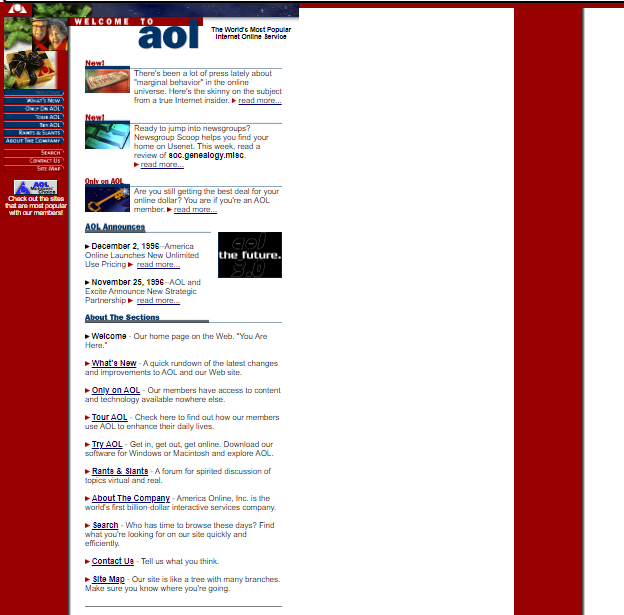
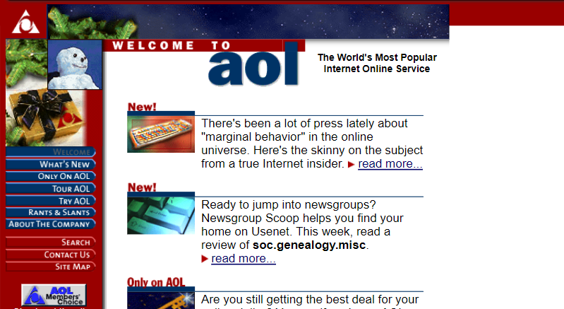
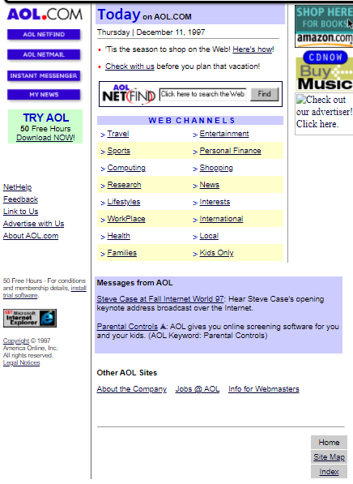
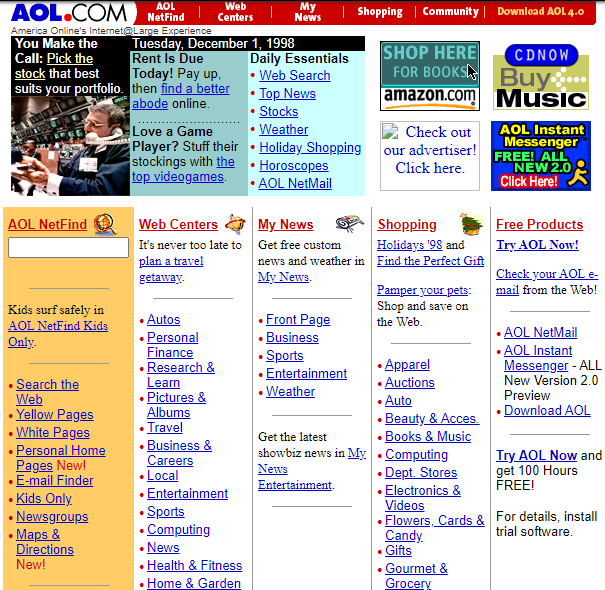
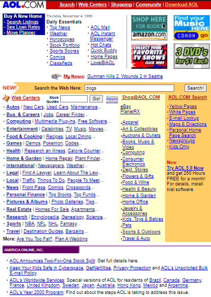
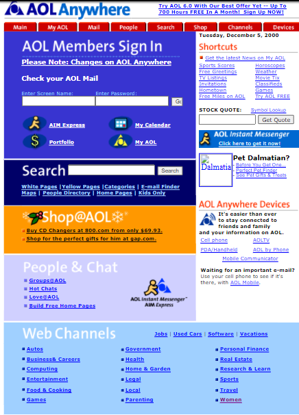

Apresentação das mudanças ao longo do tempo do site aol
Para comerçar vamos ver um breve resumo da história do site!
O site aol (America Online) foi criado originalmente em 1983 mas como uma página que oferecia um serviço Online chamado Gameline para o videogame Atari 2700. Em 1983 com empresa praticamente falida, um especialista em vídeo game chamado Steve Case assume o comando da empresa.
Case muda a estratégia da empresa e em 1985 lança uma espécie de mega-BBS,originalmente chamado de Quantum Link ("Q-Link").Em outubro de 1989, a Quantum lançou seu serviço AOL para computadores Apple II e Macintosh.
No início da década de 1990, AOL foi uma das primeiras empresas provedoras de serviços a darem aos seus clientes, acesso a Internet fora das Universidades e da área militar.
Agora que já sabemos o ínicio e sua criação vamos ver a primeira versão da página na web
primeira versão feita em 1996

As cores da página são as mesmas cores da bandeira dos EUA, para manter a cultura patriota que os norte-americanos possuem.
Há também espalhados pelo site, gifs sem sentidos.
Todo o conteúdo da página fica do lado esquerdo, mas devido as resoluções dos monitores antigos funcionava bem, dando a impressão da página estar toda preenchida.
Mas hoje em dia percebemos que não funciona tão bem, caso dermos um zoom out, veremos a verdadeira forma do site.
E assim a visualização em 800x600

Em 1 ano de diferença tiveram alguma mudanças no site, vamos conferir

Dezembro de 1997
A primeira grande diferença é a mudança das cores. Que perde as caracteristicas patriotas, e deixa algo mais inclusivo para outras áreas
O problema da resolução ainda existem. Mas agora os anúncios estão mais organizados e dos dois lados do conteúdo principal.
Os anúncios estão mais organizados, só de olhar já da para entender do que se trata.
Não só os anúncios mas as informações estão mais centradas, não é necessario ficar rolando na página para achar algum tópico. Pelo contrário agora possui uma barra de pesquisas.
Em 1998 tiveram grandes mudanças na forma em que o conteúdo foi apresentado!

Dezembro de 1998
Nesse ano voltaram com a proposta das cores patriotas, azul, vermelho e branco.
Apesar do problema da resolução ainda existir, encontraram uma forma de contornar, deixando toda página centralizada
A centralização da página, abriu margem para um novo rearranjo nos conteúdos. No canto superior esquerdo, por exemplo, temos a notícia mais importante no momento marcada em preto para chamar atenção.
Já o resto do site está divido em notícias secundarias e tópicos de temas específicos. E os anúncios cada vez mais organizados.
No ano de 1999, na minha visão houve uma piora no formato do site!

Novembro de 1999
O aspecto do site em geral, não teve a grandes mudanças, continou com uma cara patriota norte-americana.
Mas como podemos reparar o formato com que as notícias e os links foram apresentados, ficou pior; Pois agora é apenas uma lista de dificil visualização.
Ou seja a única grande mudança, acabou não sendo uma melhoria!
Por fim, chegamos aos anos 2000, onde gigantescas mudanças foram apresentadas

Dezembro de 2000
Apesar das cores predominantes ainda serem azul, vermelho e branco, a forma como elas foram colocadas perdeu um pouco do sentimento de patriotismo, na verdade estão representadas de uma forma muito sutil.
Para começar as mudanças, logo de cara vemos uma tela de login, para os assinantes do site se sentirem mais excluisivos tendo uma comunidade de interação entre os usuarios.
podemos reparar que o nome foi complementado para fazer propagando de um novo serviço, antes era apenas aol; E mudou para aol anywheres. O motivo da mudança é para anunciar um serviço novo o aol mobile, que é o site para os telefones moveis da época.
Uma nova adição foi o centro de vendas online da aol; shop@AOL
E a partir de agora a página principal deixou de exibir notícias, e passou a ser uma área de direcionamento para os diversos recursos oferecidos!
Relação em imagem dos 5 primeiros anos de evolução da AOL (America online)